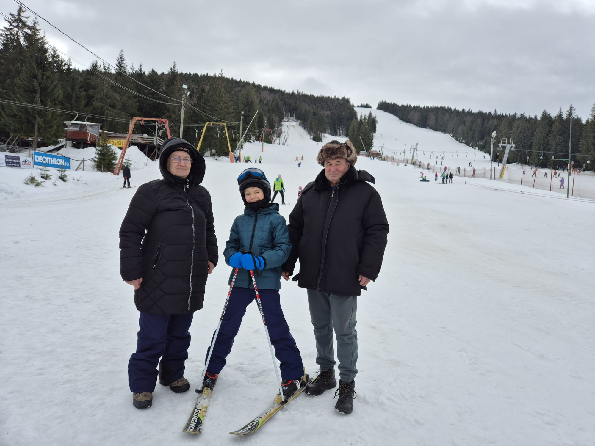

Când aveam 5 ani, dorința mea cea mai mare era să schiez.
La vârsta de 8 ani, mama mi-a citit gândurile. Ea era curioasă dacă îmi va plăcea să schiez sau nu, așa că, în februarie, mi-a făcut cea mai mare surpriză din viața mea: AM MERS LA SCHI! Toată familia, inclusiv eu, ne-am făcut bagajul, bucuroși.
La ora 6, ne-am trezit și am intrat în mașină. Mama conducea, iar eu mă gândeam cât de frumos va fi. Pe drum, m-am uitat la peisaje și eram nerăbdător să văd măcar o urmă mică de zăpadă.
Am ajuns. Ne-am luat bagajele din mașină. Erau foarte multe! Apoi ne-am cazat la o cabană simplă și am mers cu mașina la schi. Eram atât de fericit! Pârtiile erau mari, mulți copii se distrau, inclusiv adulți, iar vremea era posomorâtă, friguroasă și cu multă zăpadă, fix ce trebuia!
Mama mi-a luat un monitor de schi priceput cu care am învățat tehnicile de bază și cum să schiez. În câteva zile am învățat foarte bine. Mă simțeam ca un pui de pasăre liber.
Prima dată la schi a fost o experiență excelentă!